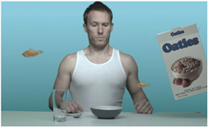

本教程向您介绍键入 Nuke 。您将学习如何使用 Primatte 、 IBK 和 Keyer 节点。
键控是最基本的合成技能之一。你不能合成任何东西，直到你有遮罩拉你想层在一起的元素。很高兴说你可以按下一个按钮来完成这项任务，但是你可能知道，一个键控操作很少会产生一个可接受的哑光。图像质量、照明条件、主题运动、颜色 -- 甚至相机移动 -- 都会影响为复合材料获得干净哑光所需的步骤。
|
 |
| 键入镜头 Nuke . |
那么如何获得干净的哑光 Nuke ？最好的方法是了解每个键控工具的优势，并根据需要将它们组合起来。本教程演示如何拉入密钥 Nuke 以及如何使用通道操作、合并节点和旋转形状对结果进行分层。
|
|